<p><strong>Configuration</strong>
<ul> <li>   ( aarch64 )</li> <li> compiler:  c++ (GCC) 12.3.1 (openEuler 12.3.1-97.oe2403sp2) </li> <li> eigen3:  </li> </ul> </p>
<hr/><a href="axpy.pdf">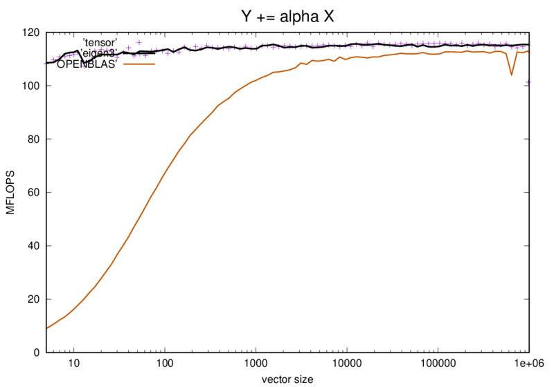</a><br/>
<hr/><a href="axpby.pdf">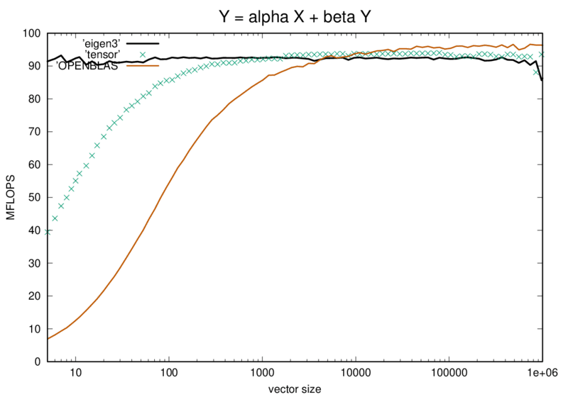</a><br/>
<hr/><a href="matrix_vector.pdf">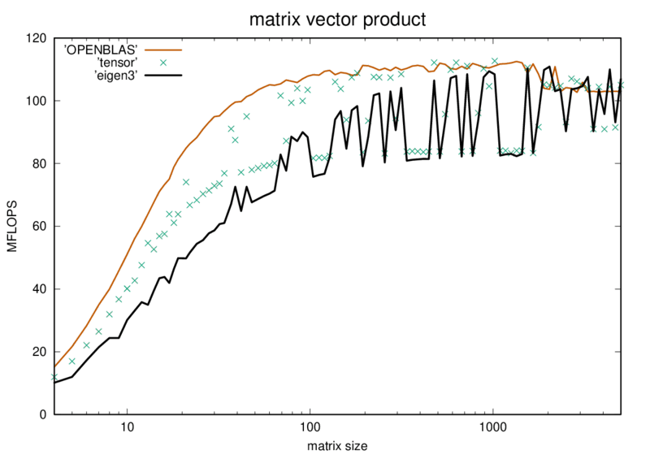</a><br/>
<hr/><a href="atv.pdf">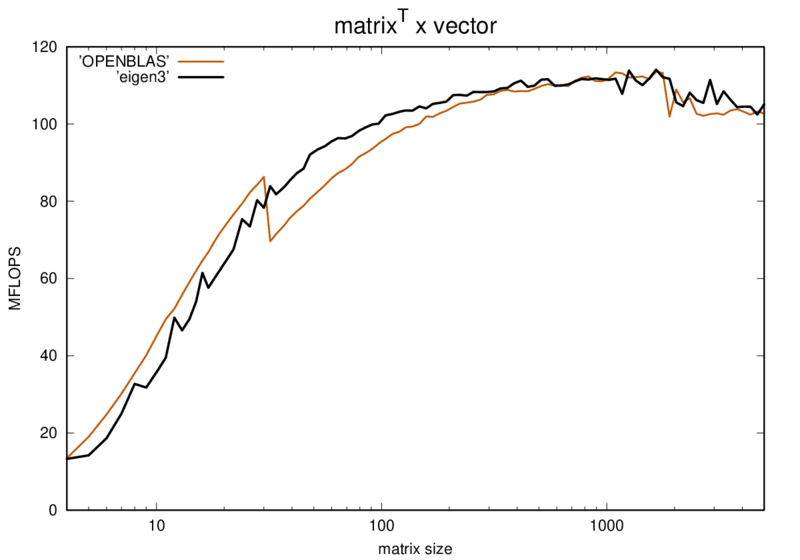</a><br/>
<hr/><a href="matrix_matrix.pdf">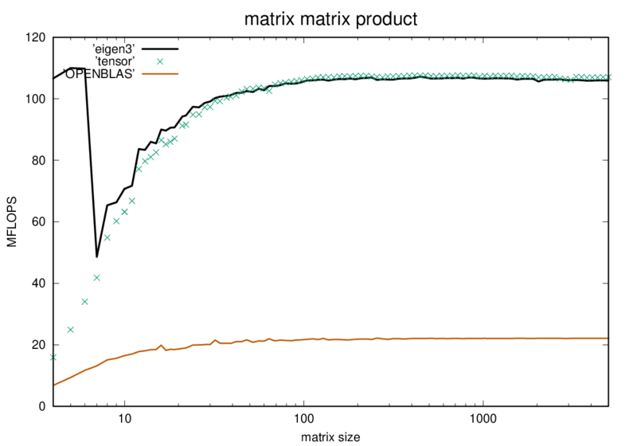</a><br/>
<hr/><a href="aat.pdf">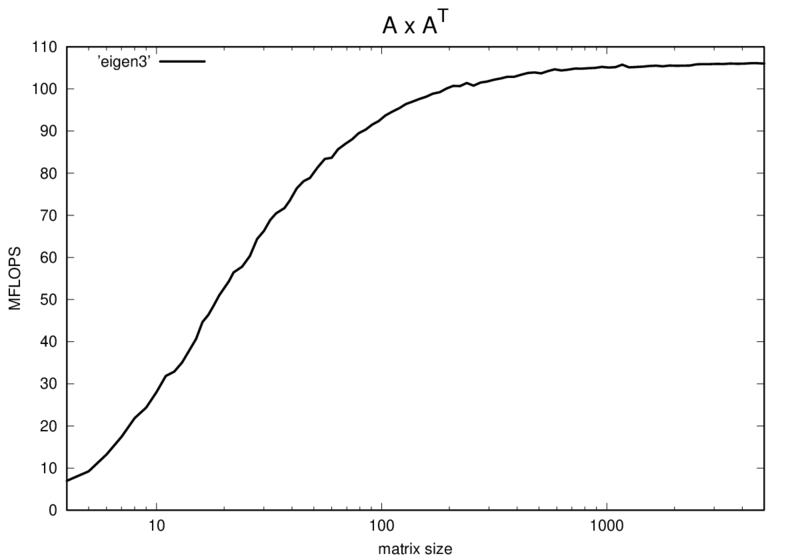</a><br/>
<hr/><a href="trmm.pdf">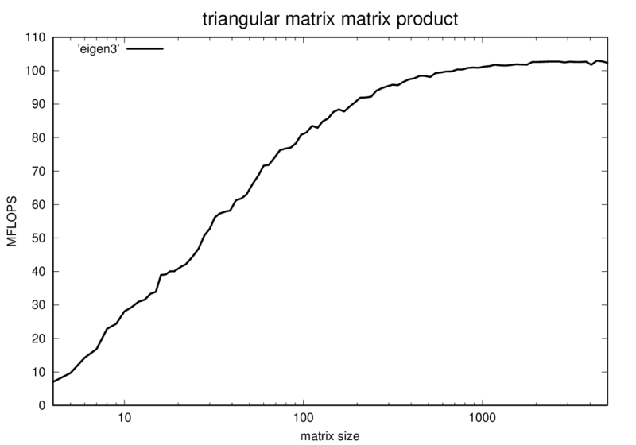</a><br/>
<hr/><a href="trisolve_vector.pdf">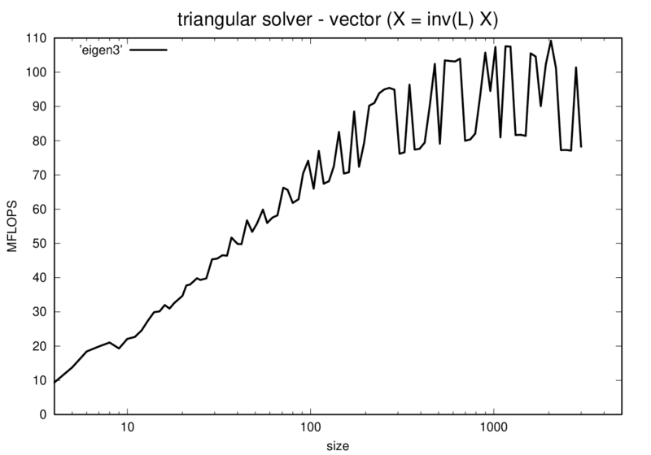</a><br/>
<hr/><a href="trisolve_matrix.pdf">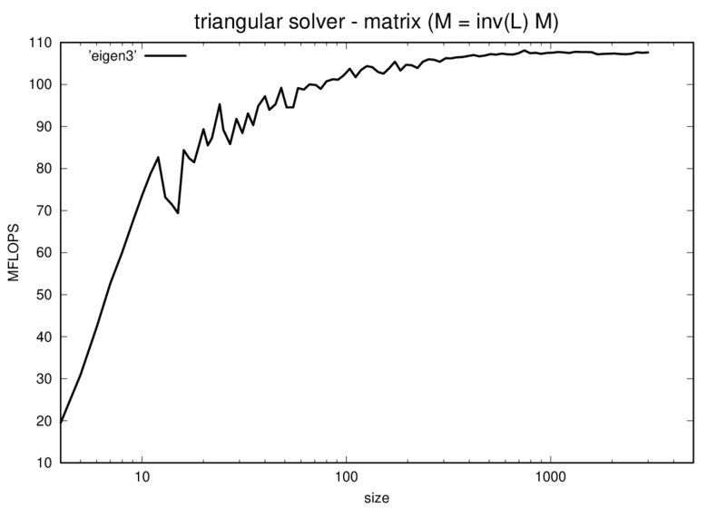</a><br/>
<hr/><a href="cholesky.pdf">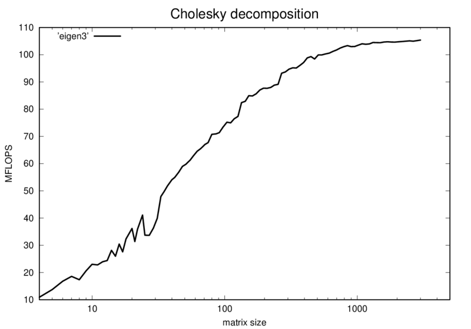</a><br/>
<hr/><a href="partial_lu_decomp.pdf">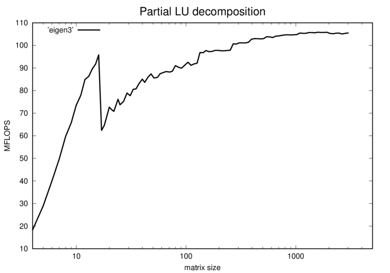</a><br/>
<hr/><a href="tridiagonalization.pdf">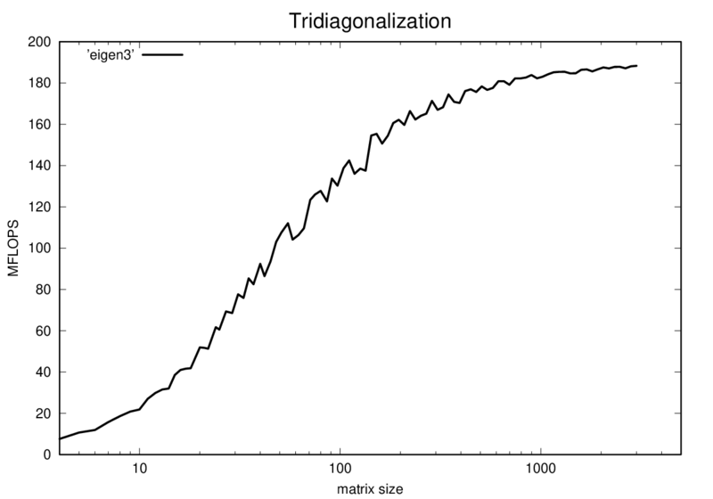</a><br/>
<hr/><a href="symv.pdf">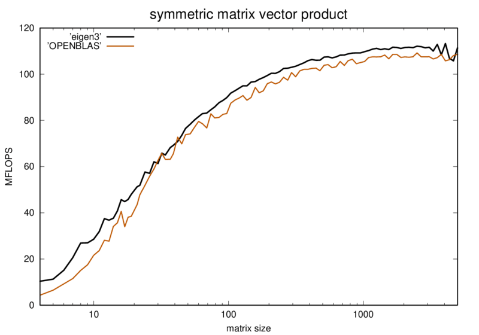</a><br/>
<hr/><a href="syr2.pdf">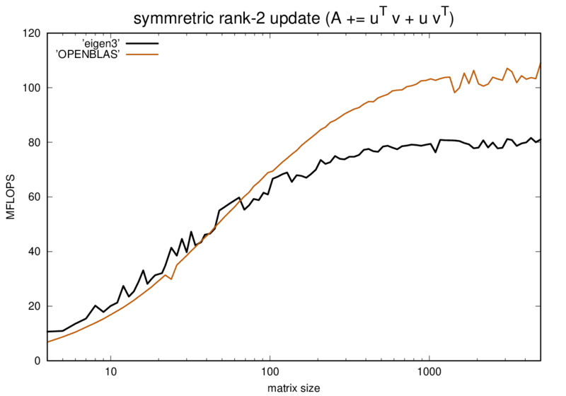</a><br/>
<hr/><a href="ger.pdf">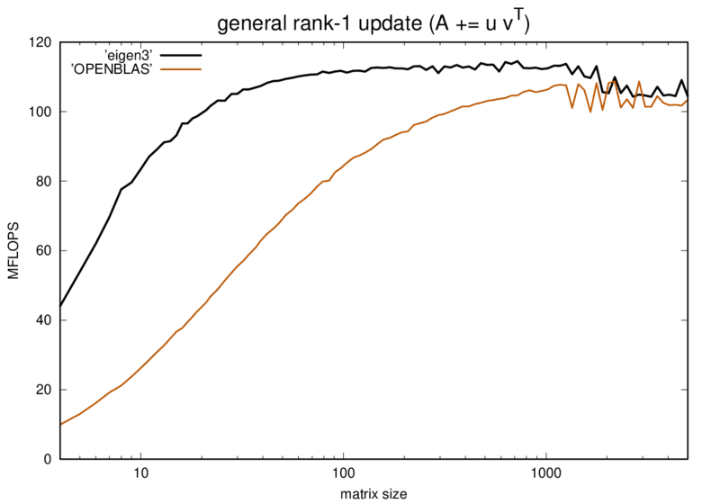</a><br/>
<hr/><a href="rot.pdf">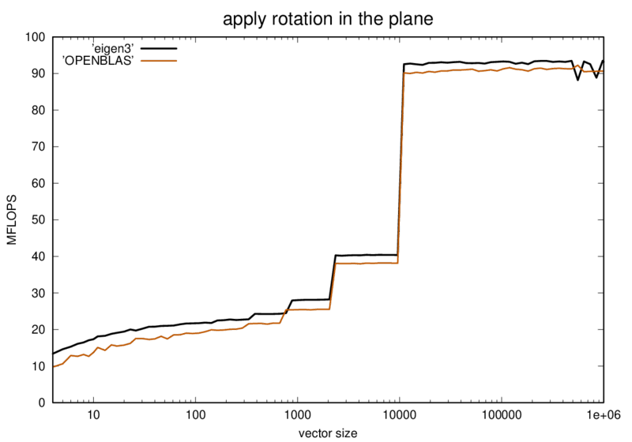</a><br/>
